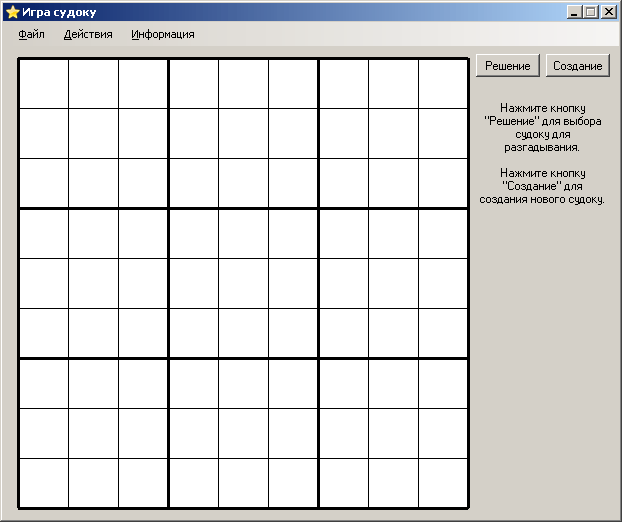

Программа судоку предназначенна для решения классических судоку (размером 9 на 9). Программа предоставляет возможность создания собственных судоку, а также ручное и автоматическое решение уже готовых. Для решения судоку необходимо расставить в поле 9 на 9 клеток цифры от 1 до 9 таким образом, чтобы в каждом столбце, каждой строке и каждом выделенном квадрате 3 на 3 все цифры были различны.
Данное руководство описывает все возможности программы на 09.02.2009. Программа периодически дополняется и улучшается. Следите за новыми версиями. Ниже представлен внешний вид программы после запуска.

В правом верхнем углу расположены кнопки для перехода между режимами программы: "Решение" (для решения уже созданных судоку) и "Создание" (для создания новых судоку).
Ниже выведена краткая подсказка для активного в данный момент окна.
Следует помнить, что на форме представлены не все возможности, которыми можно воспользоваться. Часть из них находится в меню. Кнопка "Сохранить" (для сохранения текущего состояния на поле) находится в меню "Файл".
Кнопка "Решить" (для решения текущей позиции) находится в меню "Действия".
Там же находится кнопка "Проверить расстановку", которая применяется для принудительной проверки правильности расстановки (например, после автоматического решения судоку). При ручном разгадывании эта кнопка не требуется, так как проверка производится автоматически, после заполнения всех полей.
Все эти опции доступны при любом режиме программы, в то время как специфические опции становятся доступны только при выборе определённого режима. Более подробно о дополнительных опциях смотрите в соответствующих разделах помощи, посвящённых работе в режиме создания и решения судоку.
В программе есть история действий, работающая только режиме "Решение". История ведётся, начиная с загрузки уровня. Поддерживается отмена и возврат действий. Для отмены действия выберите "Отменить ход" в пункте меню "Действия". Последовательно можно отменить все ходы до загрузки уровня. Для возврата отменённого хода выберите "Вернуть ход" в пункте меню "Действия". Принцип действия аналогичен отмене и возврату действий, реализованных в продуктах линейки Microsoft Office (Word, Excel и т.п.).